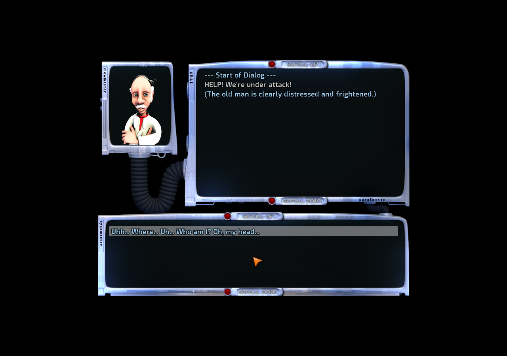

The game
This is the deepest game in the batch, with dialogue, real-time combat, equipment, skills and a campaign designed for many sessions.
A story-rich action RPG about rebel robots. Play as Tux in a ruined future, fight rebel robots, complete quests and take control of enemy machines.
Everything needed to choose, launch and learn this game is stored on GannanNet for offline use.
This is the deepest game in the batch, with dialogue, real-time combat, equipment, skills and a campaign designed for many sessions.
Play from a modern laptop or desktop browser. The game runs privately on GannanNet and streams to this page; browser play is currently silent.
Created ArcadeQA, entered the opening story and reached interactive dialogue choices while networking was disabled.

Only one streamed desktop game runs at a time. A Linux download remains available when someone else is playing.
The complete local guide includes the opening objective and first-session steps.
Left-click the ground to move. Left-click an enemy to approach and attack.
Hold Ctrl while moving to run. Right-click uses the selected skill or program.
I opens inventory, C opens character details, S opens skills and Q opens the quest log.
F3 quicksaves and F4 quickloads. Use the main menu for named saves.